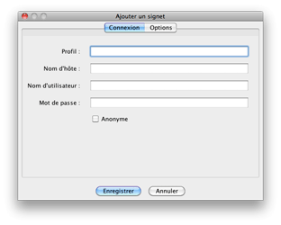
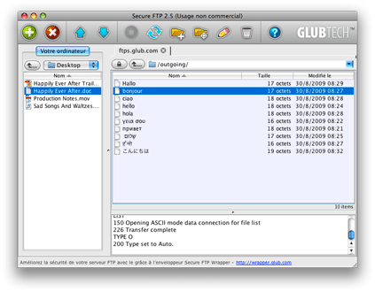

Signets
Vous pouvez être appelés à vous connectez à plusieurs sites FTP.
Vous serez donc probablement intéressés par la possibilité
d'enregistrer leur configuration afin d'y accéder rapidement.
Ajouter des signets

Il y a trois méthodes pour ajouter des signets pour vos sites FTP favoris.
- Ajout depuis la Boîte de dialogue "Ouvrir une Connexion".
- Ajout depuis l'item de menu
"Ajouter un signet" du menu "Signets".
- Ajout depuis l'item de menu "Gérer les signets" du menu "Signets".
Si vous êtes sur de vouloir sauvegarder un signet au moment de la connexion, la
méthode la plus simple consiste à sélectionner l'option Ajouter aux signets de la
boîte de dialogue "Ouvrir une connexion". Après la connexion, un signet sera ajouté pour ce
site. Par défaut, le nom de profil correspond au nom d'hôte.
Vous pourrez modifier ce nom plus tard en éditant les propriétés du signet dans la boîte de dialogue Gestion des signets dialog.
Si vous êtes déjà connecté(e) ou souhaitez ajouter un signet sans
vous connecter, vous pouvez le faire à partir du menu "Signets" en sélectionnant l'item
de menu Ajouter un signet, ce qui vous permettra de sauvegarder toutes les informations nécessaires.
Gestion des signets

Lorsqu'un signet a été sauvegardé, vous pouvez éditer les informations le concernant
à partir de la boîte de dialogue "Gestion des signets". Vous pouvez accéder à cette boîte de dialogue
à partir de l'item de menu Gérer les signets du menu "Signets". Cette boîte de dialogue vous permet à la fois de définir l'ordre d'apparition des signets dans le menu, d'éditer les attributs des signets, d'ajouter un nouveau signet, ou de supprimer un signet.
Signets globaux
Il s'agit d'un type de signet que vous pouvez utiliser mais que vous ne pouvez pas modifier.
On les appelle des signets globaux. Ces signets globaux ne sont pas
différents de vos propres signets locaux, mais on y accède à partir d'une adresse URL HTTP
que vous pouvez définir dans les préférences. L'adresse URL doit faire référence à un fichier XML de signets Secure FTP 2.5 valide.